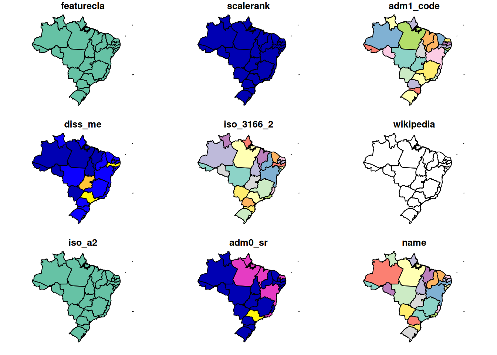

Chapter 3 Creating a Country Level Map with Sampling Points
In this first exercise we will use rnaturalearth, simple features and ggplot2 to create a map of Brazil and states within Brazil to use as the base of the maps we will create in these exercises.
3.1 Get the Data to Create Our Map
3.1.1 Add a Simple Features file of Brazil
This is our base layer, Brazil, of the map from (Naturalearth.com)[https://naturalearth.com/] using the base plot() to display these data.
## Warning: plotting the first 9 out of 83 attributes; use max.plot = 83 to
## plot all